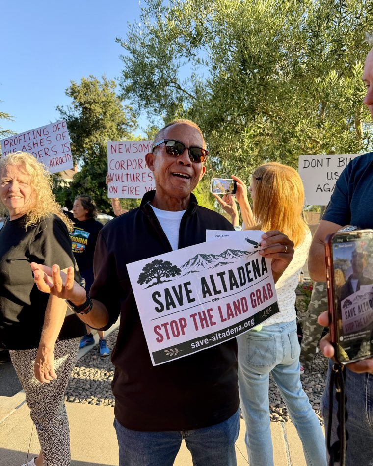
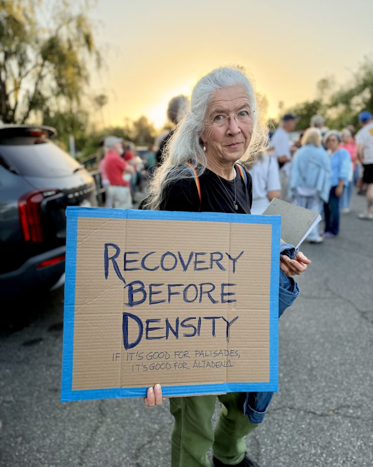

Altadena Recovery Watch is a community effort for a responsible and resilient recovery from the Eaton Fire.
We are a group of over 2,000 fire survivors, residents, property owners, community businesses, and more that are concerned about the future of Altadena. We want to ensure that Altadena's recovery results in a resilient community that has some resemblance of our roots and also welcomes new community members to enjoy what makes Altadena special.
This fight has brought Altadena together — homeowners and renters, longtime families and new neighbors, across incomes and backgrounds. We honor Altadena’s history and its diversity, we protect it from corporate and speculative interests, and we insist that the pathways to rebuild put first the people who lost their homes and the neighbors who were displaced and need a way back.


Where We Stand
Our position on SB 1090 — tap any point to expand.
Altadena deserves the same protection the Palisades received.
Fire-hazard zones in the burn areas got SB 9 relief by executive order — but the hazard map left most of Altadena out. And because SB 1123 is barred in high fire-hazard zones, the Palisades is shielded while Altadena’s recovery area is left exposed. Left out of the protection, and left open to the harm.
It costs the recovery nothing — but the threat is accelerating.
Altadenans are rebuilding by the thousands through ordinary permits. Every SB 1123 subdivision applicant we have identified is an outside corporate investor1 — not a returning resident — and the filings are clustering fast: the most active developer filed seven-plus maps in a matter of months. A recorded subdivision can never be undone, and once one developer goes down the by-right pathway, market forces pull in more. Pausing it now does not slow recovery — it protects it.
It should not be easier to build than to rebuild.
A survivor may rebuild only about 10% larger to utilize the fast track “like-for-like plus 10%” permit, while an out-of-town developer on the same burned lot may put up ten units, by right, with no hearing — and can move much faster than a resident still fighting to get funding from their insurer and the SCE claim.
SB 1090 protects the SHRA’s original purpose — true urban infill.
The Starter Home Revitalization Act was written for scattered infill on rare vacant lots, not fire-cleared disaster blocks. SB 1090 simply affirms that original intent — keeping the SHRA focused on true urban infill so it does not become, informally, the “Altadena Fire Sale Act.” It does not repeal the SHRA; it asks only that one disaster zone not absorb the region’s density goals during recovery while neighboring jurisdictions don’t do their fair share.
Settle the uncertainty while the rules are contested.
How SB 1123 applies to a fire-cleared disaster zone is genuinely contested, leaving these approvals open to legal challenge. SB 1090 gives the community certainty now, instead of leaving recovery hostage to whichever interpretation ultimately prevails.
Let Altadena rebuild under its own plan.
The community had just completed its own blueprint — the West San Gabriel Valley Area Plan (WSGVAP), approved by the County the month before the fire (December 2024). The WSGVAP already increased multifamily-zoned lots and allowable density in our commercial corridors, which still welcome higher-density housing. ADU law already lets homeowners add units without subdividing. SB 1123 was built for infill, not as the primary planning tool for a disaster zone — let us rebuild on our own principles first.
Life safety must come first.
Narrow, single-access foothill streets just failed catastrophically in a deadly fire. Multiplying households and cars on them is a direct evacuation hazard — and a ministerial approval carries no traffic, evacuation, or cumulative fire-safety review.
The infrastructure isn’t there.
Many burned blocks are on septic, not public sewer systems, lack sidewalks, and sit on undersized roads and an infrastructure grid still being rebuilt. SB 1123 assumes urban infrastructure that isn’t present on these foothill lots.
It protects the residents most at risk.
The fire fell hardest on historically marginalized blocks, on elderly longtime owners who are equity-rich but cash-poor and underinsured, and on renters — two-thirds of whose rent-stabilized homes burned. SB 9 and SB 1123 carry no affordability provisions, and there is no evidence the housing built by out-of-town speculators will be affordable or prioritized for returning residents.
1. Ownership behind each SB 1123 subdivision is identified from public title and deed records, recorded sale records, and the County’s subdivision filings (RPPL records). On that basis, every SB 1123 subdivision applicant we have identified is a corporate or investor entity (LLC/LP), not a returning Altadena homeowner rebuilding their own home.